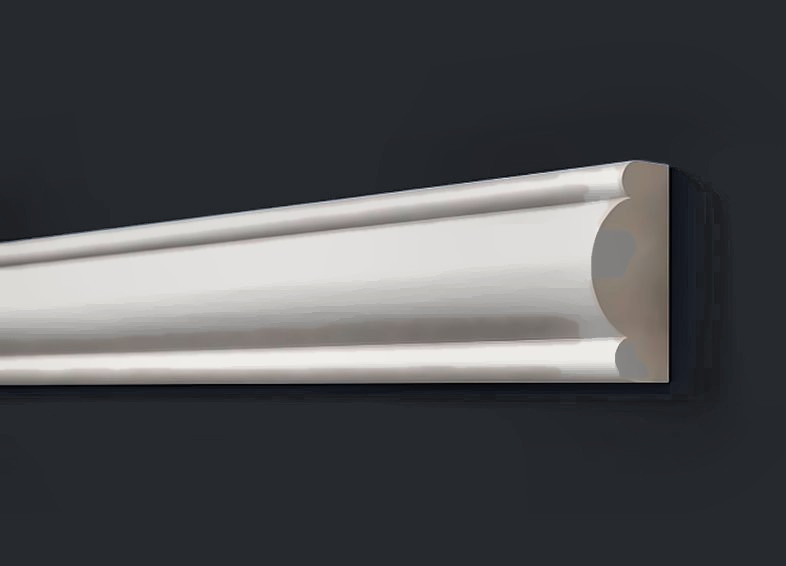

Молдинги на стене в интерьере: как разложить рамки и не ошибиться с размерами
Молдинги на стене — самый недорогой способ сделать гладкую стену «архитектурной»: рамки, панно, деление на пояса. Собрали правила разметки и размеров, которые работают в обычных квартирах.
Где молдинги смотрятся лучше всего
- Стена за диваном или кроватью — одна большая рамка или три одинаковых; внутри можно сменить цвет или наклеить обои.
- Коридор и прихожая — ряд одинаковых рамок по длинной стене задаёт ритм и визуально вытягивает пространство.
- Горизонтальное деление — один молдинг на высоте 90–110 см разделяет стену на низ (темнее) и верх (светлее); в столовой это заменяет стеновую панель.
- Обрамление ТВ — рамка чуть больше телевизора, провода прячутся в молдинг с кабель-каналом A35/2 или A157/2.
- Дверные проёмы — универсальный профиль как наличник: он же подходит и как плинтус, и как молдинг.
Размеры рамок
Рамки одинаковой ширины по всей стене — главный признак аккуратной работы. Удобное правило: отступ от потолочного плинтуса, от напольного плинтуса и между рамками — одинаковый, 10–15 см при потолке 2,5–2,7 м. Ширину стены делят так, чтобы рамки были одной ширины: например, стена 360 см — три рамки по 100 см с четырьмя отступами по 15 см. Над дверью или окном рамку делают короче, но той же ширины, что соседние.
Высокая узкая рамка (пропорция 1:2 и выше) вытягивает стену вверх; рамки близкие к квадрату спокойнее. Над диваном рамка обычно шире дивана на 10–20 см с каждой стороны.
Какую ширину молдинга выбрать
- 15–25 мм — тонкие рамки, несколько рамок на стене, спальня и коридор: A130, A35, A605.
- 30–50 мм — одна-две крупные рамки за диваном, горизонтальное деление: A157, A002, A151.
- 60–96 мм — широкая рамка-портал, стена с высоким потолком: A302, A152, A601.
Чем выше потолок и больше стена, тем шире молдинг; в маленькой комнате широкий профиль «съедает» стену.

Разметка и монтаж
- Нарисуйте схему стены с размерами и посчитайте периметр всех рамок плюс 10 % на подрезку углов. Длина молдинга — 2 м (A611/3 и A611/4 — 3 м).
- Отбейте на стене горизонтали лазерным уровнем, вертикали — по рулетке от угла; ошибка в 2–3 мм видна на рамке, лучше перепроверить.
- Углы режьте под 45° в стусле, стыки промазывайте клеем. Клей — монтажный на водной основе; молдинг лёгкий, держится без гвоздей.
- Через сутки зашпаклюйте углы акрилом, зашлифуйте и покрасьте: в цвет стены — спокойный вариант, в контраст (тёмная рамка на светлой стене) — графичнее.
Пример расчёта
Стена за диваном 3,6 м, потолок 2,7 м, плинтус 80 мм, потолочный плинтус 50 мм. Делаем три рамки шириной 100 см с отступами 15 см: 4 × 15 + 3 × 100 = 360 см — ровно по стене. Высота рамки: 270 − 8 − 5 − 15 − 15 = 227 см, округляем до 220 см. Периметр одной рамки 2 × (100 + 220) = 640 см, трёх — 19,2 м, плюс 10 % на углы — 21,2 м. Молдинг 2 м → 11 штук. Клея — одна туба, шпаклёвки — одна маленькая банка. Краска — та же, что для стены, если рамки в цвет. Один вечер на разметку и монтаж, следующий — на шпаклёвку и покраску.
С чем сочетать
Молдинг той же ширины, что верхняя полка напольного плинтуса, — и стена выглядит собранной. Потолочный плинтус в той же стилистике: гладкий молдинг — гладкий карниз. Если на соседней стене реечные панели, рамки лучше не делать — достаточно одного акцента.
Все профили с размерами, чертежом и ценой — в разделе молдинги.
Отправляем в Москву и любой регион транспортной компанией — как устроена доставка. Самовывоз в Санкт-Петербурге бесплатно.